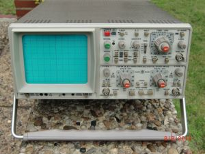
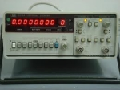
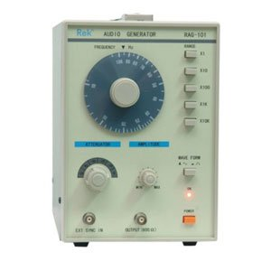
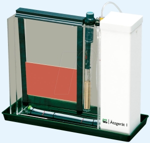
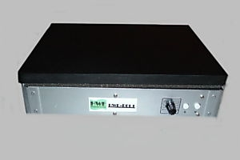
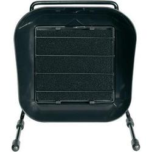
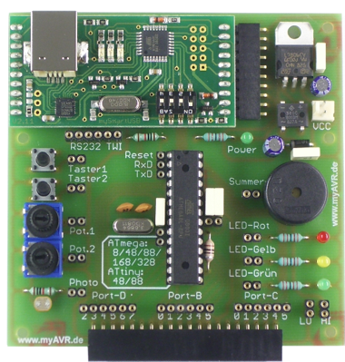
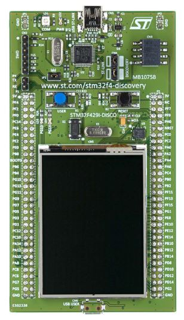

Meine Ausstattung
Allgemein
Labornetzgerät DF 1730 SB
Digitale Lötstation ZD-931
Lötdampf-Filtersystem ZD-153
Messtechnik
HAMEG Oszilloskop HM305
100 MHz Zähler Hewlett Packard 5315A
Audio Signal Generator RAG-101
Platinenherstellung
Platinen-Ätzgerät bis Platinengröße 235x170mm
UV-Belichtungsgerät HWE-BEL3
Mikrocontroller Entwicklungsboards
myAVR Board MK2 USB
STM32F429 Discovery
Wenn man sich etwas professioneller mit Elektronik beschäftigen möchte als auf Experimentierkasten-Niveau kommt man um etwas Investition nicht vorbei. Hier findet ihr einen Überblick was sich bei mir inzwischen an Equipment angesammelt hat.
Labornetzgerät DF 1730 SB

|
|
Digitale Lötstation ZD-931
|

|
HAMEG Oszilloskop HM305
|  |
30 MHz Analog-/Digital-Skop HM 305
Analog: 2 Kanäle 0 - 30MHz, 1mV/cm - 50V/cm, Komponent-Tester |
Hewlett Packard 5315A
|
Hierbei handelt es sich um einen 100 MHz Zähler mit achtstelliger LED-Anzeige. Er arbeitet nach der Reziprok-Zählmethode - diese gewährleistet eine Auflösung von 7 Digits/Sekunde im Frequenzbereich von 1 Hz bis 100 MHz.
Beide Eingangskanäle bieten eine Empfindlichkeit bis zu 10 mV. |
 |
Audio Signal Generator RAG-101
|  |
Modell Nr.: rag101, Marke: rek Ausgang:
Sinus-Ausgang:
Rechteckwellenformen Ausgang:
Gleichlaufeigenschaften:
Netzteil 220V AC 8W |
Platinen-Ätzgerät bis Platinengröße 235x170mm
|
Inklusive regelbarer Heizung, sowie Umwälzpumpe für Ätzflüssigkeit und Luftverteilerschlauch, sowie verstellbarem Platinenhalter. Durch die Acryl-Küvette lässt sich der Ätzvorgang jederzeit kontrollieren. Lieferung erfolgt unmontiert. |
 |
UV-Belichtungsgerät HWE-BEL3
|  |
Das HWE-BEL3 kann für die verschiedensten UV-Belichtungen verwendet werden. In einem Rahmen aus Aluminium befinden sich 2 8W Philips-UV-Röhren mit einer Wellenlänge von 365 nm. Die Belichtungsfläche beträgt 160X250 mm. Die am Deckel angebrachte Schaumstoffauflage sorgt für einen gleichmäßigen Anpressdruck und die exakte Fixierung des Filmmaterials. Der integrierte Timer kann stufenlos von 0- ca. 10min. Belichtungszeit eingestellt werden. Über einen zusätzlichen Reset-Taster kann auf Wunsch der Belichtungsvorgang jederzeit abgebrochen werden. |
Lötdampf-Filtersystem ZD-153
|
 |
myAVR Board MK2 USB
|  |
Ausstattung:
Eigenschaften:
|
STM32F429 Discovery
|
Eigenschaften:
|
 |